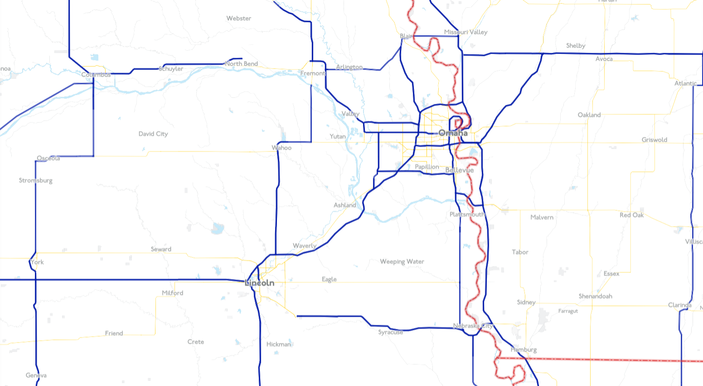

For this project the task was to create a unique tileset inspired by any style you find compelling. My whole life I have been drawn to transit maps more so than any other type of map. As a kid I used to spend my free time just looking at the New York subway map, memorizing the lines and stations. I chose the London Underground because of how influential its design is on other subway maps. The London Tube map was the first to adopt the clean, modern look which has become the standard for transit maps today. My main goal for this tileset was to recreate that clean and modern feel.
The current London Tube map
The combination of red, dark blue, and white is the most common motif. It is used for the logo, subway lines, and coloration of the subway trains.
Highways are the train lines while cities are the stations
As you zoom in more roads fill in. Large roads are blue, medium roads yellow, and small roads, green. These are the colors of the Piccadily, Circle and District lines
Surface railroads have the teal color of the DLR line. This includes subways, light rail, passenger rail, and freight rail.
At the highest zoom local roads appear in the dark grey of the Jubilee line.
Parks are shown in light grey. Water in light blue. All other background features are not distinguished and shown in white.
Known as Johnson Underground, this font has become associated with the distinct look of the London Underground. In the image above it is used for the road names and airport name. The only other font used is Arno, which is used for transit features(above) and country names(below).
Bold font is used to distinguish large cities from towns.
Explore the map yourself